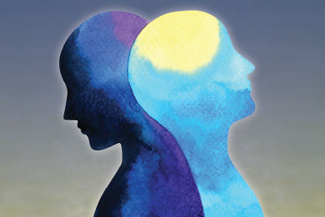
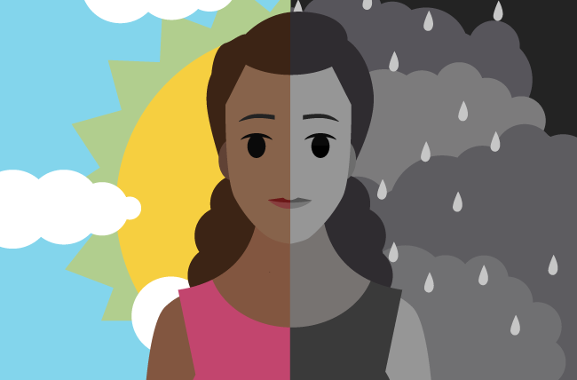

What is Bipolar?
Bipolar disorder, also known as manic-depressive illness, is a mental health condition characterized by extreme shifts in mood, energy levels, and activity levels. Individuals with bipolar disorder experience episodes of mania or hypomania (elevated mood) and episodes of depression. These mood episodes can vary in duration and intensity, and the periods of normal mood between episodes are referred to as euthymic states.
There are several types of bipolar disorder, including:
- Bipolar I Disorder:In this type, individuals experience at least one manic episode, which is a distinct period of abnormally elevated, expansive, or irritable mood lasting for at least one week. Depressive episodes may also occur.
- Bipolar II Disorder: Individuals with Bipolar II Disorder experience at least one major depressive episode and at least one hypomanic episode, which is a less severe form of mania that lasts for at least four days.
- Cyclothymic Disorder:This type involves numerous periods of hypomanic symptoms and depressive symptoms that last for at least two years (one year in children and adolescents). However, the symptoms do not meet the full criteria for hypomanic or depressive episodes.
Causes of Bipolar
- Genetic Factors: Bipolar disorder tends to run in families, suggesting a genetic component. Having a close family member with bipolar disorder increases the risk of developing the condition. However, it's important to note that having a family history does not guarantee that an individual will develop bipolar disorder.
- Biological Factors:Structural and functional abnormalities in the brain may contribute to the development of bipolar disorder. Brain imaging studies have revealed differences in the size and activity of specific brain regions involved in emotional regulation and decision-making.
- Neurochemical Imbalance: Imbalances in certain brain chemicals (neurotransmitters), such as dopamine, serotonin, and norepinephrine, are believed to play a role in bipolar disorder. These imbalances can affect mood regulation, leading to the characteristic mood swings observed in the condition
- Hormonal Factors:Hormonal changes, such as those occurring during puberty, pregnancy, or menopause, may influence the onset or course of bipolar disorder. Women with bipolar disorder may experience mood episodes associated with their menstrual cycle.
Symptoms of Bipolar
- Persistent feelings of sadness,hopelessness,or emptiness
- Loss of interest or pleasure in activities
- Sleep disturbances (insomnia or excessive sleep)
- Fatigue or loss of energy
Treatment
- Medications:
- Mood Stabilizers: Medications such as lithium, valproate, and lamotrigine are often prescribed to stabilize mood and prevent or reduce the frequency and intensity of mood episodes.
- Antipsychotics: Certain antipsychotic medications, such as quetiapine, olanzapine, and aripiprazole, can be used to help manage symptoms of mania or mixed episodes.
- Antidepressants: In some cases, antidepressant medications may be prescribed cautiously to manage depressive episodes. However, their use in bipolar disorder is typically combined with a mood stabilizer to minimize the risk of triggering a manic or hypomanic episode.
- Psychotherapy:
- Cognitive-Behavioral Therapy (CBT): CBT can help individuals identify and change negative thought patterns and behaviors associated with bipolar disorder. It can also provide skills for managing stress, coping with triggers, and improving problem-solving abilities.
- Psychoeducation: Learning about bipolar disorder, its symptoms, triggers, and treatment options can empower individuals to better manage their condition and make informed decisions about their care. Psychoeducation may be provided in individual or group settings.
- Lifestyle Adjustements:
- Regular Sleep Patterns: Maintaining a consistent sleep schedule and ensuring adequate sleep can help stabilize mood. Disruptions in sleep patterns can trigger mood episodes in individuals with bipolar disorder.
- Stress Reduction: Learning stress management techniques, such as relaxation exercises, mindfulness, and engaging in enjoyable activities, can help individuals reduce stress levels and manage triggers.
- Substance Abuse Management: Avoiding alcohol and illicit substances is important, as they can worsen mood symptoms and interfere with the effectiveness of medications.